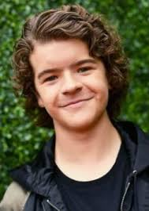
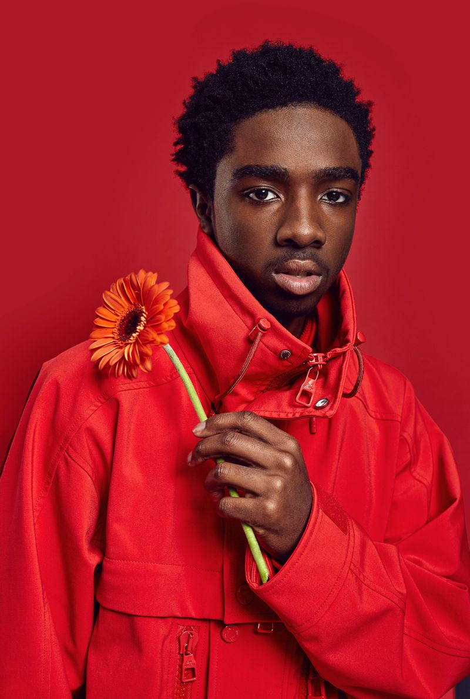
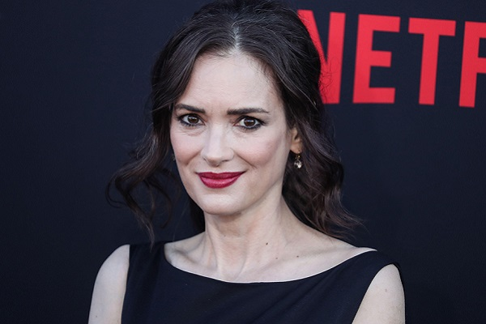

Сериал STRANGER THINGS
1980-е годы, тихий провинциальный американский городок. Благоприятное течение местной жизни нарушает загадочное исчезновение подростка по имени Уилл. Выяснить обстоятельства дела полны решимости родные мальчика и местный шериф, также события затрагивают лучшего друга Уилла — Майка. Он начинает собственное расследование. Майк уверен, что близок к разгадке, и теперь ему предстоит оказаться в эпицентре ожесточенной битвы потусторонних сил.
Главные актеры
Финн Ву́лфард (англ. Finn Wolfhard, род. 23 декабря 2002, Ванкувер) — канадский актёр. Наиболее известен по роли Майка Уилера в телесериале «Очень странные дела» и по роли Ричи Тозиера в фильме ужасов «Оно».
Вместе со своими коллегами-актерами по сериалу «Очень странные дела» Шнапп получил Премию Гильдии киноактеров США как «Лучший актерский состав в драмат
Браун родилась 19 февраля 20. Говорят, что она овладела американским акцентом, потому что она практиковала его, наблюдая за диснеевским каналом в свое время. Это хороший способ освоить новый акцент, верно?
Гейтен Матараццо в основном играл на театральной сцене с момента его дебюта в 2011 году, и исполнил лишь одну эпизодическую роль в сериале канала NBC "Черный список", пока не прошел кастинг в "Очень странные дела". Именно роль Дастина Хендерсона принесла ему широкую известность на телевидении.

«Очень странные дела» принесли Сэди мировую популярность, но это не первая большая работа актрисы в сериалах: в 2015 году Сэди сыграла вместе с Анной Фрил в «Американской одиссее» — политическом триллере в лучших традициях «Родины».
Молодой актер Калеб Маклафлин имеет не очень большую фильмографию, но стремительно движется к тому, чтобы стать всемирно известным. Первый шаг на пути к цели он уже сделал, снявшись в нашумевшей многосерийной ленте «Очень странные дела», которая несколько сезонов радует любителей фантастики и всего необъяснимого.

Джозеф Дэвид Кири появился на свет 24 апреля 1992-го в большой семье, состоящей из 5 детей (двое из них — близнецы). Его знак зодиака — Телец. Родиной юноши является город Ньюберипорт, что в штате Массачусетс. Один из его родственников настоял на том, чтобы Кири начал заниматься актерским мастерством.
В 2016-м году Дэвид Харбор принял участие в постановке трагедии «Троил и Крессида» в рамках программы «Шекспир в парке». Актёру довелось сыграть мифического героя Ахиллеса.
Наталия Дайер – восходящая звезда американского телевидения, прославившаяся после участия в фантастическом сериале «Очень странные дела».
Вайнона Лора Горовиц родилась 29 октября 1971 года в округе Олмстед, штат Миннесота в семье Синтии Палмер (урождённой Истас) и Майкла Горовиц. Своим именем она обязана названию соседнего города Уинона.